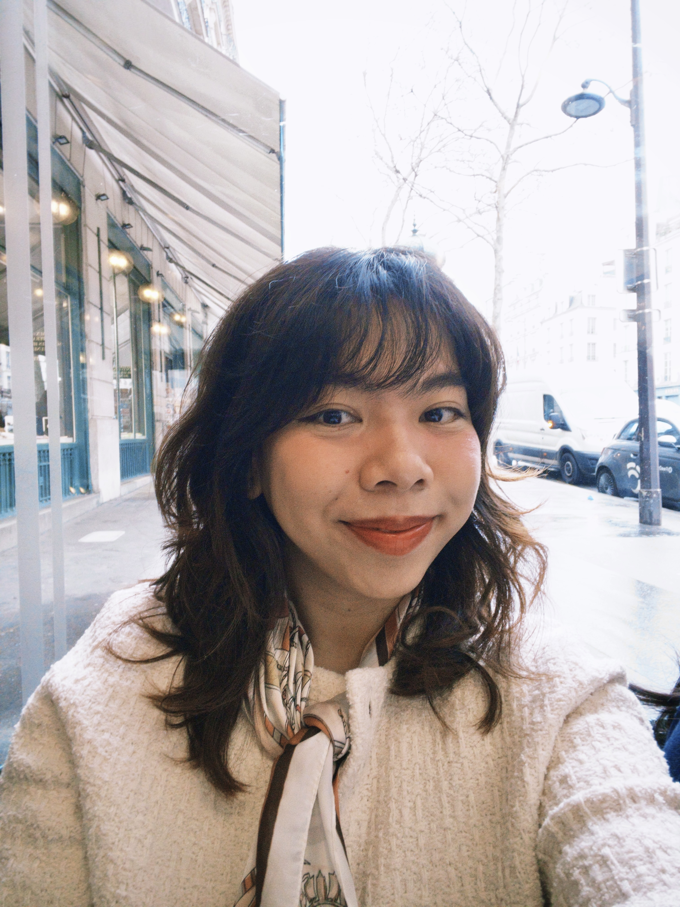

Giang Do
A UX/UI designer with six years across visual, interaction and system design. Curiosity got me here from animation; empathy shapes what I make.
—:—:— CET
KÖLN, DE
A UX/UI designer with six years across visual, interaction and system design. Curiosity got me here from animation; empathy shapes what I make.
UX design, design systems, and research — industry work alongside academic projects.
{{ p_brief }}
{{ p_solution }}

My name is Giang Do /zang doe/. If I had to describe myself in one word, it would be curiosity.
I started my career as an art director and animator, then followed the question I couldn't stop asking: why do people struggle with things that should just work? That question turned me into a UX designer.
Today I work fully in German at IVU Traffic Technologies in Aachen, living in Köln, contributing to B2B transit software products and the company-wide Figma design system. Before Germany, I lived and worked in Singapore and Vietnam. I'm finishing a Master's in Usability Engineering — which has only made me more curious about how people and interfaces meet.